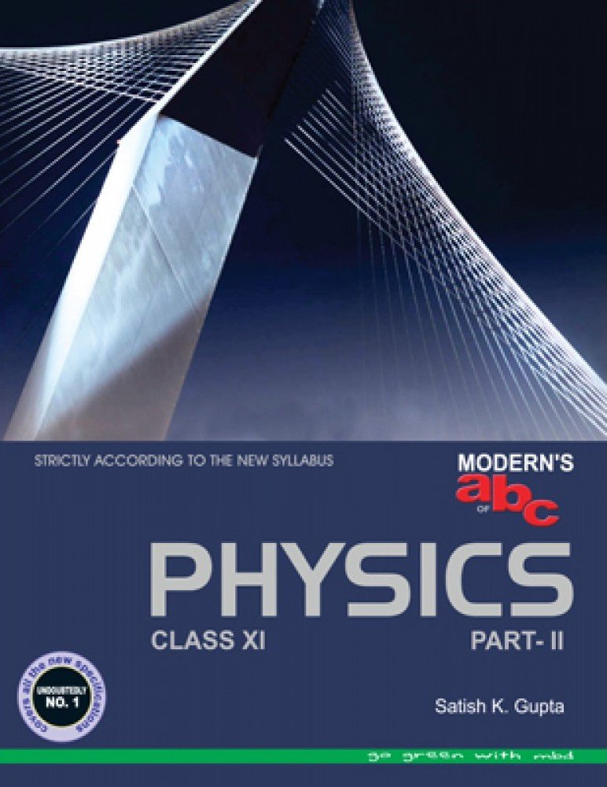
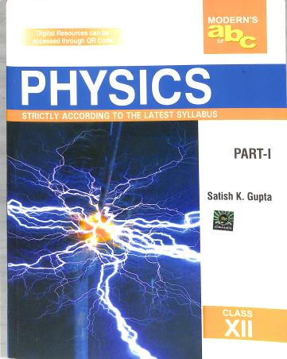
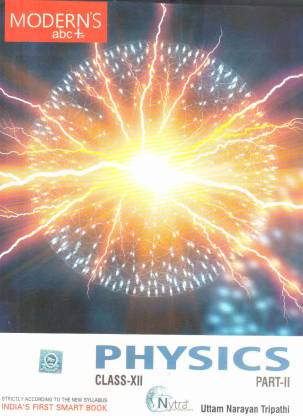
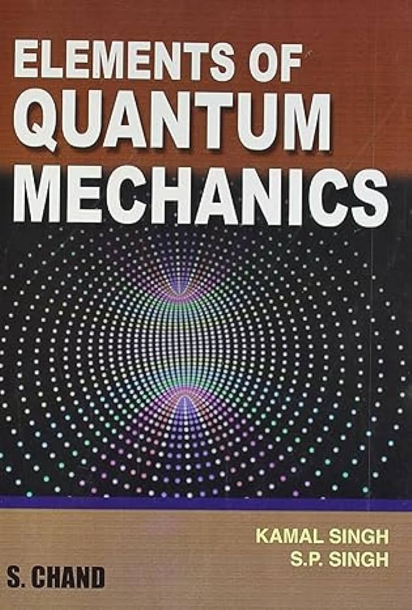
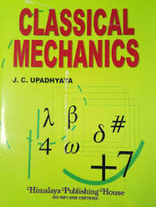
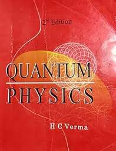
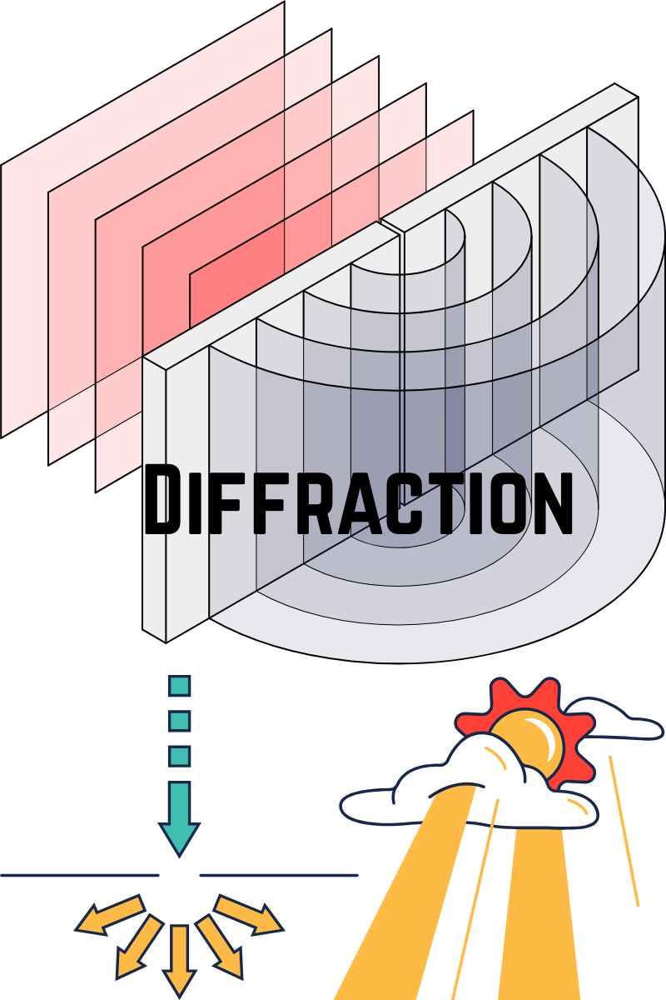
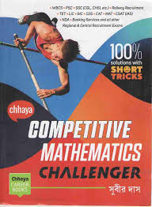

This page hosts a personal academic collection of books and study materials related to Programming, Physics, Mathematics, and Biomedical Sciences.
All books belong to their respective authors and publishers.







